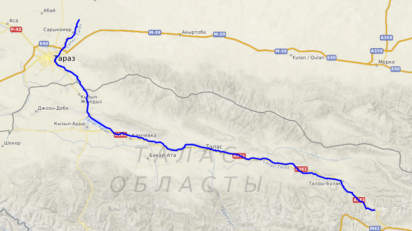

Taraz - is a city and the administrative center of Jambyl Region in Kazakhstan, located on the Talas River in the south of the country near the border with Kyrgyzstan.
"Хочу в Джамбул, Там тепло, Там моя мама"
("I want to go to Dzhambul, It's warm there, My mother is there")
Catchphrase from the movie "Gentlemen of Fortune"
Some Information About Taraz:
- Taraz has the population of about 380,000 (2009)
- Formerly Talas, Zhambyl, Dzambul and Aulie-Ata
- The phone code is +7 7262; postal codes - 080000-080019
- On January 8th, 1997, by Kazakhstan President’s decree the city Zhambyl was renamed into Taraz. In autumn 2002 Taraz celebrated its 2,000th anniversary.
- There are institutions for training teachers, food and light-industry technicians, and irrigation engineers in Taraz. The city also has a museum and two theaters.
- Taraz city is a good place to stop for a day travelling between Tashkent and Almaty. There are number of nice mausoleums of 9-12th centuries inside and around Taraz city of Kazakhstan.
- The 12th century Aishai-Bibi mausoleum is located 18 km west of Taraz city. It obtained the status of UNESCO-protected architectural monument because of picturesque fretwork, which covers the whole building.
- The 11th century Babadja-Khatun is the only mausoleum in Central Asia with 16-rib umbrella shaped dome. Arabic note on the wall says: “The woman from the country of Babadji”.
- The medieval city of Talas was a major trade centre along the Silk Road.
- Kazakhstan, officially the Republic of Kazakhstan
- Transcontinental landlocked country located mainly in Central Asia and partly in Eastern Europe.
Kazakhstan is the world's largest landlocked country, the world's largest Muslim-majority country by land area (and the northernmost), and the ninth-largest country in the world overall.
It has a population of 19 million people, and one of the lowest population densities in the world, at fewer than 6 people per square kilometre (15 people per square mile).
Its capital is Nur-Sultan, formerly known as Astana until 2019. Almaty, Kazakhstan's largest city, was the country's capital until 1997.(according to wiki)
Talas river - is a river that rises in the Talas Region of Kyrgyzstan and flows west into Kazakhstan. It is formed from the confluence of the Karakol and Uch-Koshoy. It runs through the city of Taraz in Zhambyl Province of Kazakhstan and vanishes in the Muyunkum Desert before reaching Lake Aydyn. The river is 661 kilometres (411 mi) long and has a basin area of 52,700 square kilometres (20,300 sq mi).
The Silk Road - was a network of Eurasian trade routes active from the second century BCE until the mid-15th century. Spanning over 6,400 kilometers (4,000 miles), it played a central role in facilitating economic, cultural, political, and religious interactions between the East and West. First coined in the late 19th century, the name "Silk Road" has fallen into disuse among some modern historians in favor of Silk Routes, which more accurately describes the intricate web of land and sea routes connecting East and Southeast Asia, the Indian subcontinent, Central Asia, the Middle East, East Africa and Europe.